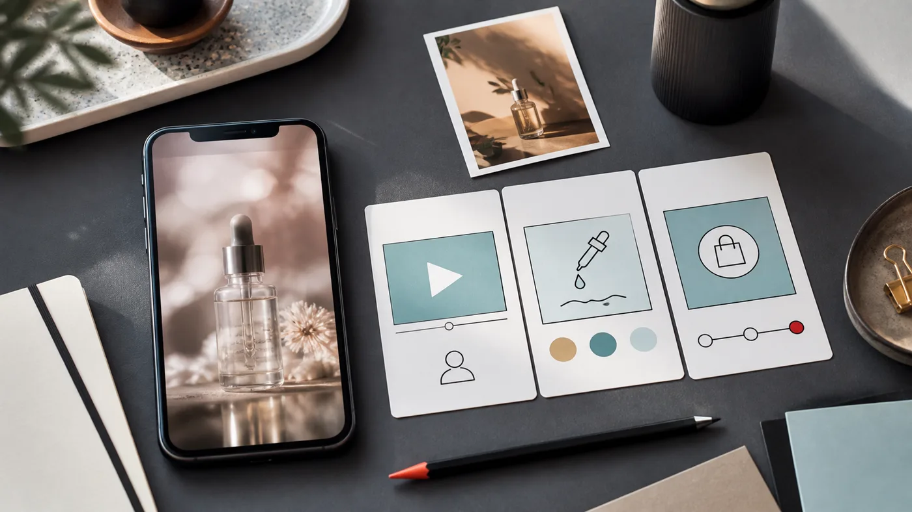
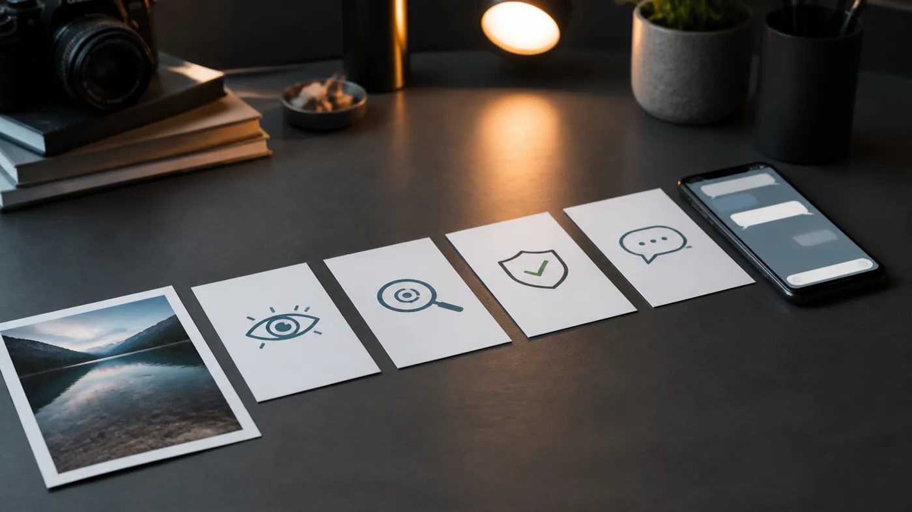

Главная ошибка
Люди не покупают “красиво”. Они покупают, когда узнают себя
Владелец кафе, салона, магазина или студии часто думает: “Нам нужен красивый ролик”. Это понятно. Красота важна: она останавливает взгляд, создает первое доверие и показывает уровень. Но сама по себе она редко отвечает на главный вопрос клиента: “Почему мне это нужно?”
Если ролик показывает только приятную картинку, зритель может подумать: “Нормально выглядит” - и пролистать дальше. Он не почувствовал проблему, не увидел обещание, не понял выгоду и не получил маленький повод написать.

Психология
Зритель не обязан разгадывать, что вы хотели сказать
Человек в ленте смотрит быстро. Он не сидит с блокнотом и не анализирует бренд. В первую секунду он решает: “Это про меня или нет?” Если ответ неясен, даже дорогая картинка становится просто очередным красивым шумом.
Поэтому хороший короткий ролик начинается не с эффекта, а с выбора мысли. Не “сделаем премиально”, а “покажем, почему к вам хочется зайти”, “объясним, чем ваша услуга отличается”, “покажем результат так, чтобы его захотелось повторить”.
Воронка
Внутри ролика должна быть маленькая дорожка
Даже короткое видео на 6-10 секунд должно вести человека по шагам. Не обязательно давить продажей. Достаточно дать понятную последовательность: зацепить, показать деталь, вызвать доверие и оставить простой следующий шаг.

1. Зацепка
Зритель должен сразу понять, на что смотреть: товар, место, результат, проблема или неожиданный контраст.
2. Доказательство
Показываем не обещание, а видимую причину поверить: фактуру, процесс, масштаб, сравнение, деталь.
3. Желание
Ролик должен дать ощущение: сюда хочется прийти, это хочется попробовать, это стоит рассмотреть ближе.
4. Следующий шаг
В финале человеку должно быть легко понять, что делать: написать, посмотреть пример, отправить фото, задать вопрос.
Быстрый разбор
Как понять, почему ваша картинка не ведет к заявке
Возьмите любой пост, фото или ролик и посмотрите на него глазами человека, который впервые видит ваше дело. Не глазами автора, не глазами дизайнера, а глазами уставшего человека в ленте.
- Понятно ли за 2 секунды, что именно здесь предлагают?
- Есть ли в кадре один главный объект, а не набор красивых деталей?
- Видно ли, чем это полезно человеку, а не только как это выглядит?
- Есть ли причина доверять: процесс, результат, деталь, атмосфера, лицо, предмет?
- Понятно ли, что сделать после просмотра: написать, перейти, сохранить, прийти, спросить?
Если хотя бы на два вопроса ответ “нет”, проблема скорее всего не в цвете, музыке или эффекте. Проблема в том, что ролик не собрал для зрителя простую мысль.
Примеры
Одна и та же красота должна работать по-разному
У каждого дела своя причина, по которой клиент должен остановиться. Поэтому нельзя делать один одинаковый шаблон для всех. Салону важен результат и доверие. Кафе - атмосфера и желание зайти. Товару - фактура, применение и ощущение ценности. Эксперту - ясность мысли и уверенность.
Кафе или ресторан
Не просто красивый зал. Важно показать момент: свет на столе, блюдо, настроение вечера, повод забронировать.
Салон или студия
Не просто интерьер. Важно показать, как человек почувствует себя после услуги: аккуратнее, увереннее, спокойнее.
Товар
Не просто предмет на фоне. Важно показать, зачем он нужен, как выглядит в руке, чем отличается и где его хочется использовать.
Личный бренд
Не просто портрет. Важно показать позицию: в чем человек разбирается и почему к нему можно обратиться.
Мини-ТЗ
Что подготовить, чтобы ролик получился полезным
Чем точнее исходная задача, тем меньше шансов получить просто красивое видео “ни о чем”. Для первого разговора достаточно короткого ответа без сложных терминов.
Что показываем
Товар, услугу, интерьер, результат работы, мастера, процесс, событие или атмосферу места.
Кому показываем
Новым клиентам, старым клиентам, подписчикам, людям из района, покупателям конкретного товара.
Что человек должен понять
Почему к вам стоит зайти, чем вы отличаетесь, что изменится после покупки или услуги.
Куда ведем
В сообщения VK, Telegram, на сайт, в запись, в комментарий, к просмотру примера или к сохранению.
Проверка
Три вопроса перед тем, как делать ролик
Перед генерацией, съемкой или монтажом полезно остановиться и честно ответить на три вопроса. Они простые, но именно они часто отделяют красивую картинку от ролика, который может привести к сообщению.
- Что человек должен понять в первые 2 секунды?
- Какую одну мысль он должен унести после просмотра?
- Почему ему должно быть легко написать, перейти или сохранить?
Если ответов нет, лучше сначала чинить идею. И только потом выбирать музыку, ракурс, эффекты и формат. Иначе ролик может выглядеть дорого, но работать как витрина без двери.
Как мы помогаем
AI Motion Lab начинает не с эффекта, а с того, что должно измениться у зрителя
Мы берем ваши фото, видео или простое описание и ищем не только красивый кадр, а полезную мысль: что показать, кому показать, в каком формате и к какому действию вести. После этого можно собрать короткое киношное видео для VK, Telegram, Shorts, Reels, сайта или рекламного теста.
Иногда достаточно одной фотки товара, интерьера, рабочего места или результата услуги. Но задача не в том, чтобы просто “оживить фото”. Задача - показать ваше дело так, чтобы человеку стало понятнее, почему к вам стоит обратиться.